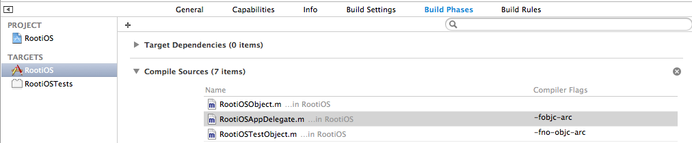

ARC
ARC的本质
自动的引用计数（Automatic Reference Count 简称 ARC），是苹果在 WWDC 2011 年大会上提出的用于内存管理的技术。
引用计数（Reference Count）是一个简单而有效的管理对象生命周期的方式。当我们创建一个新对象的时候，它的引用计数为 1，当有一个新的指针指向这个对象时，我们将其引用计数加 1，当某个指针不再指向这个对象是，我们将其引用计数减 1，当对象的引用计数变为 0 时，说明这个对象不再被任何指针指向了，这个时候我们就可以将对象销毁，回收内存。由于引用计数简单有效，除了 Objective-C 语言外，微软的 COM（Component Object Model ）、C++11（C++11 提供了基于引用计数的智能指针 share_prt） 等语言也提供了基于引用计数的内存管理方式。
引用计数这种内存管理方式虽然简单，但是手工写大量的操作引用计数的代码不但繁琐，而且容易被遗漏。于是苹果在 2011 年引入了 ARC。ARC 顾名思义，是自动帮我们填写引用计数代码的一项功能。
ARC 的想法来源于苹果在早期设计 Xcode 的 Analyzer 的时候，发现编译器在编译时可以帮助大家发现很多内存管理中的问题。后来苹果就想，能不能干脆编译器在编译的时候，把内存管理的代码都自动补上，带着这种想法，苹果修改了一些内存管理代码的书写方式（例如引入了 @autoreleasepool 关键字）后，在 Xcode 中实现了这个想法。
ARC是编译器（时）特性，而不是运行时特性，更不是垃圾回收器(GC)。
Automatic Reference Counting (ARC) is a compiler-level feature that simplifies the process of managing object lifetimes (memory management) in Cocoa applications.
ARC只是相对于MRC（Manual Reference Counting或称为非ARC，下文中我们会一直使用MRC来指代非ARC的管理方式）的一次改进，但它和之前的技术本质上没有区别。具体信息可以参考Objective-C Automatic Reference Counting (ARC)
ARC的开启与关闭
不同于XCode4可以在创建工程时选择关闭ARC，XCode5在创建的工程是默认开启ARC，没有可以关闭ARC的选项。
如果需要对特定文件开启或关闭ARC，可以在工程选项中选择Targets -> Compile Phases -> Compile Sources，在里面找到对应文件，添加flag:
- 打开ARC：
-fobjc-arc - 关闭ARC：
-fno-objc-arc
如图： 
ARC的修饰符
ARC主要提供了4种修饰符，他们分别是:__strong,__weak,__autoreleasing,__unsafe_unretained。
__strong
表示引用为强引用。对应在定义property时的"strong"。所有对象只有当没有任何一个强引用指向时，才会被释放。
注意：如果在声明引用时不加修饰符，那么引用将默认是强引用。当需要释放强引用指向的对象时，需要将强引用置nil。
__weak
表示引用为弱引用。对应在定义property时用的"weak"。弱引用不会影响对象的释放，即只要对象没有任何强引用指向，即使有100个弱引用对象指向也没用，该对象依然会被释放。
__weak 与 weak 的区别只在于，前者用于变量的声明，而后者用于属性的声明。
不过好在，对象在被释放的同时，指向它的弱引用会自动被置nil，这个技术叫zeroing weak pointer。这样有效得防止无效指针、野指针的产生。
__weak一般用在delegate关系中防止循环引用或者用来修饰指向由Interface Builder编辑与生成的UI控件。
__autoreleasing
表示在autorelease pool中自动释放对象的引用，和MRC时代autorelease的用法相同。定义property时不能使用这个修饰符，任何一个对象的property都不应该是autorelease型的。
一个常见的误解是，在ARC中没有autorelease，因为这样一个“自动释放”看起来好像有点多余。这个误解可能源自于将ARC的“自动”和autorelease“自动”的混淆。其实你只要看一下每个iOS App的main.m文件就能知道，autorelease不仅好好的存在着，并且变得更fashion了：不需要再手工被创建，也不需要再显式得调用[drain]方法释放内存池。
#import <UIKit/UIKit.h>
#import "AppDelegate.h"
int main(int argc, char * argv[]) {
@autoreleasepool {
return UIApplicationMain(argc, argv, nil, NSStringFromClass([AppDelegate class]));
}
}
以下两行代码的意义是相同的。
NSString *str = [[[NSString alloc] initWithFormat:@"hehe"] autorelease]; // MRC
NSString *__autoreleasing str = [[NSString alloc] initWithFormat:@"hehe"]; // ARC
__autoreleasing在ARC中主要用在参数传递返回值（out-parameters）和引用传递参数（pass-by-reference）的情况下。
__autoreleasing is used to denote arguments that are passed by reference (id *) and are autoreleased on return.
比如常用的NSError的使用：
NSError *__autoreleasing error;
if (![data writeToFile:filename options:NSDataWritingAtomic error:&error])
{
NSLog(@"Error: %@", error);
}
注意，如果你的error定义为了strong型，那么，编译器会帮你隐式地做如下事情，保证最终传入函数的参数依然是个__autoreleasing类型的引用。
NSError *error;
NSError *__autoreleasing tempError = error; // 编译器添加
if (![data writeToFile:filename options:NSDataWritingAtomic error:&tempError])
{
error = tempError; // 编译器添加
NSLog(@"Error: %@", error);
}
所以为了提高效率，避免这种情况，我们一般在定义error的时候将其（老老实实地=。=）声明为__autoreleasing类型的：NSError *__autoreleasing error;
在这里，加上__autoreleasing之后，相当于在MRC中对返回值error做了如下事情：
NSError *error = [[[NSError alloc] init] autorelease];
error指向的对象在创建出来后，被放入到了autoreleasing pool中，等待使用结束后的自动释放，函数外error的使用者并不需要关心error指向对象的释放。
另外一点，在ARC中，所有这种指针的指针(NSError)的函数参数如果不加修饰符，编译器会默认将他们认定为__autoreleasing类型。
比如下面的两段代码是等同的：
- (NSString *)doSomething:(NSNumber **)value
{
// do something
}
- (NSString *)doSomething:(NSNumber * __autoreleasing *)value
{
// do something
}
除非你显式得给value声明了__strong，否则value默认就是__autoreleasing的。
最后一点，某些类的方法会隐式地使用自己的autorelease pool，在这种时候使用__autoreleasing类型要特别小心。
比如NSDictionary的[enumerateKeysAndObjectsUsingBlock]方法：
- (void)loopThroughDictionary:(NSDictionary *)dict error:(NSError **)error
{
[dict enumerateKeysAndObjectsUsingBlock:^(id key, id obj, BOOL *stop){
// do stuff
if (there is some error)
{
*error = [NSError errorWithDomain:@"MyError" code:1 userInfo:nil];
*stop = YES;
}
}];
}
会隐式地创建一个autorelease pool，上面代码实际类似于：
- (void)loopThroughDictionary:(NSDictionary *)dict error:(NSError **)error
{
[dict enumerateKeysAndObjectsUsingBlock:^(id key, id obj, BOOL *stop){
@autoreleasepool // 被隐式创建
{
if (there is some error)
{
*error = [NSError errorWithDomain:@"MyError" code:1 userInfo:nil];
*stop = YES;
}
}
}];
// *error 在这里已经被dict的做枚举遍历时创建的autorelease pool释放掉了 ：(
}
为了能够正常的使用*error，我们需要一个strong型的临时引用，在dict的枚举Block中是用这个临时引用，保证引用指向的对象不会在出了dict的枚举Block后被释放，正确的方式如下：
- (void)loopThroughDictionary:(NSDictionary *)dict error:(NSError **)error
{
__block NSError* tempError; // 加__block保证可以在Block内被修改
[dict enumerateKeysAndObjectsUsingBlock:^(id key, id obj, BOOL *stop)
{
if (there is some error) {
*tempError = [NSError errorWithDomain:@"MyError" code:1 userInfo:nil];
*stop = YES;
} 
}]
if (error != nil)
{
*error = tempError;
} 
}
__unsafe_unretained
ARC是在iOS 5引入的，而这个修饰符主要是为了在ARC刚发布时兼容iOS 4以及版本更低的设备，因为这些版本的设备没有weak pointer system，简单的理解这个系统就是我们上面讲weak时提到的，能够在weak引用指向对象被释放后，把引用值自动设为nil的系统。这个修饰符在定义property时对应的是"unsafe_unretained"，实际可以将它理解为MRC时代的assign：纯粹只是将引用指向对象，没有任何额外的操作，在指向对象被释放时依然原原本本地指向原来被释放的对象（所在的内存区域）。所以非常不安全。
现在可以完全忽略掉这个修饰符了，因为iOS 4早已退出历史舞台很多年。
使用修饰符的正确姿势（方式=。=）
You should decorate variables correctly. When using qualifiers in an object variable declaration,the correct format is:
ClassName * qualifier variableName;
按照这个说明，要定义一个weak型的NSString引用，它的写法应该是：
NSString * __weak str = @"hehe"; // 正确！
而不应该是：
__weak NSString *str = @"hehe"; // 错误！
那这里就有疑问了，既然文档说是错误的，为啥编译器不报错呢？文档又解释道：
Other variants are technically incorrect but are “forgiven” by the compiler. To understand the issue, seehttp://cdecl.org/.
好吧，看来是苹果爸爸（=。=）考虑到很多人会用错，所以在编译器这边贴心地帮我们忽略并处理掉了这个错误：）虽然不报错，但是我们还是应该按照正确的方式去使用这些修饰符，如果你以前也常常用错误的写法，那看到这里记得以后不要这么写了，哪天编译器怒了，再不支持错误的写法，就要郁闷了。
栈中指针默认值为nil
无论是被strong，weak还是autoreleasing修饰，声明在栈中的指针默认值都会是nil。所有这类型的指针不用再初始化的时候置nil了。虽然好习惯是最重要的，但是这个特性更加降低了“野指针”出现的可能性。
在ARC中，以下代码会输出null而不是crash:)
- (void)myMethod
{
NSString *name;
NSLog(@"name: %@", name);
}
ARC与Block
在MRC时代，Block会隐式地对进入其作用域内的对象（或者说被Block捕获的指针指向的对象）加retain，来确保Block使用到该对象时，能够正确的访问。
这件事情在下面代码展示的情况中要更加额外小心。
MyViewController *myController = [[MyViewController alloc] init…];
// 隐式地调用[myController retain];造成循环引用
myController.completionHandler = ^(NSInteger result) {
[myController dismissViewControllerAnimated:YES completion:nil];
};
[self presentViewController:myController animated:YES completion:^{
[myController release]; // 注意，这里调用[myController release];是在MRC中的一个常规写法，并不能解决上面循环引用的问题
}];
在这段代码中，myController的completionHandler调用了myController的方法[dismissViewController...]，这时completionHandler会对myController做retain操作。而我们知道，myController对completionHandler也至少有一个retain（一般准确讲是copy），这时就出现了在内存管理中最糟糕的情况：循环引用！简单点说就是：myController retain了completionHandler，而completionHandler也retain了myController。循环引用导致了myController和completionHandler最终都不能被释放。我们在delegate关系中，对delegate指针用weak就是为了避免这种问题。
不过好在，编译器会及时地给我们一个警告，提醒我们可能会发生这类型的问题
#warning Capturing 'myController' strongly in this block is likely to lead to a retain cycle
对这种情况，我们一般用如下方法解决：给要进入Block的指针加一个__block修饰符。
在ARC下Block默认在堆上，Block不允许修改外部变量的值，这里所说的外部变量的值，指的是栈中指针的内存地址。__block所起到的作用就是只要观察到该变量被 block 所持有，就将“外部变量”在栈中的内存地址放到了堆中。进而在block内部也可以修改外部变量的值。
这个__block在MRC时代有两个作用：
- 说明变量可改
- 说明指针指向的对象不做这个隐式的retain操作
一个变量如果不加__block，是不能在Block里面修改的，不过这里有一个例外：static的变量和全局变量不需要加__block就可以在Block中修改。
使用这种方法，我们对代码做出修改，解决了循环引用的问题：
MyViewController * __block myController = [[MyViewController alloc] init…];
// ...
myController.completionHandler = ^(NSInteger result) {
[myController dismissViewControllerAnimated:YES completion:nil];
};
//之后正常的release或者retain
在ARC引入后，没有了retain和release等操作，情况也发生了改变：在任何情况下，__block修饰符的作用只有上面的第一条：说明变量可改。即使加上了__block修饰符，一个被block捕获的强引用也依然是一个强引用。
这样在ARC下，如果我们还按照MRC下的写法，completionHandler对myController有一个强引用，而myController对completionHandler有一个强引用，这依然是循环引用，没有解决问题 : （
于是我们还需要对原代码做修改。简单的情况我们可以这样写：
__block MyViewController * myController = [[MyViewController alloc] init…];
// ...
myController.completionHandler = ^(NSInteger result) {
[myController dismissViewControllerAnimated:YES completion:nil];
myController = nil; // 注意这里，保证了block结束myController强引用的解除
};
在completionHandler之后将myController指针置nil，保证了completionHandler对myController强引用的解除，不过也同时解除了myController对myController对象的强引用。这种方法过于简单粗暴了，在大多数情况下，我们有更好的方法。
这个更好的方法就是使用weak。（或者为了考虑iOS4的兼容性用unsafe_unretained，具体用法和weak相同，考虑到现在iOS4设备可能已经绝迹了，这里就不讲这个方法了）
为了保证completionHandler这个Block对myController没有强引用，我们可以定义一个临时的弱引用weakMyViewController来指向原myController的对象，并把这个弱引用传入到Block内，这样就保证了Block对myController持有的是一个弱引用，而不是一个强引用。如此，我们继续修改代码：
MyViewController *myController = [[MyViewController alloc] init…];
// ...
MyViewController * __weak weakMyViewController = myController;
myController.completionHandler = ^(NSInteger result) {
[weakMyViewController dismissViewControllerAnimated:YES completion:nil];
};
这样循环引用的问题就解决了，但是却不幸地引入了一个新的问题：由于传入completionHandler的是一个弱引用，那么当myController指向的对象在completionHandler被调用前释放，那么completionHandler就不能正常的运作了。在一般的单线程环境中，这种问题出现的可能性不大，但是到了多线程环境，就很不好说了，所以我们需要继续完善这个方法。
为了保证在Block内能够访问到正确的myController，我们在block内新定义一个强引用strongMyController来指向weakMyController指向的对象，这样多了一个强引用，就能保证这个myController对象不会在completionHandler被调用前释放掉了。于是，我们对代码再次做出修改：
MyViewController *myController = [[MyViewController alloc] init…];
// ...
MyViewController * __weak weakMyController = myController;
myController.completionHandler = ^(NSInteger result) {
MyViewController *strongMyController = weakMyController;
if (strongMyController) {
// ...
[strongMyController dismissViewControllerAnimated:YES completion:nil];
// ...
}
else {
// Probably nothing...
}
};
到此，一个完善的解决方案就完成了：）
Block捕获的引用和内部定义的引用区别
官方文档对这个问题的说明到这里就结束了，但是可能很多朋友会有疑问，不是说不希望Block对原myController对象增加强引用么，这里为啥堂而皇之地在Block内新定义了一个强引用，这个强引用不会造成循环引用么？理解这个问题的关键在于理解被Block捕获的引用和在Block内定义的引用的区别。为了搞得明白这个问题，这里需要了解一些Block的实现原理，但由于篇幅的缘故，本文在这里就不展开了，详细的内容可以参考文末资料。
这里假设大家已经对Block的实现原理有所了解了。我们就直入主题了！注意前方高能（=。=）
为了更清楚地说明问题，这里用一个简单的程序举例。比如我们有如下程序：
#include <stdio.h>
int main()
{
int b = 10;
int *a = &b;
void (^blockFunc)() = ^(){
int *c = a;
};
blockFunc();
return 1;
}
程序中，同为int型的指针，a是被Block捕获的变量，而c是在Block内定义的变量。我们用clang -rewrite-objc处理后，可以看到如下代码：
int main()
{
int b = 10;
int *a = &b;
void (*blockFunc)() = (void (*)())&__main_block_impl_0((void *)__main_block_func_0, &__main_block_desc_0_DATA, a);
((void (*)(__block_impl *))((__block_impl *)blockFunc)->FuncPtr)((__block_impl *)blockFunc);
return 1;
}
Block的结构：
struct __main_block_impl_0 {
struct __block_impl impl;
struct __main_block_desc_0* Desc;
int *a; // 被捕获的引用 a 出现在了block的结构体里面
__main_block_impl_0(void *fp, struct __main_block_desc_0 *desc, int *_a, int flags=0) : a(_a) {
impl.isa = &_NSConcreteStackBlock;
impl.Flags = flags;
impl.FuncPtr = fp;
Desc = desc;
}
};
实际执行的函数：
static void __main_block_func_0(struct __main_block_impl_0 *__cself) {
int *a = __cself->a; // bound by copy
int *c = a; // 在block中声明的引用 c 在函数中声明，存在于函数栈上
}
我们可以清楚得看到，a和c存在的位置完全不同，如果Block存在于堆上（在ARC下Block默认在堆上），那么a作为Block结构体的一个成员，也自然会存在于堆上，而c无论如何，永远位于Block内实际执行代码的函数栈内。这也导致了两个变量生命周期的完全不同：c在Block的函数运行完毕，即会被释放，而a呢，只有在Block被从堆上释放的时候才会释放。
回到我们的MyViewController的例子中，同上理，如果我们直接让Block捕获我们的myController引用，那么这个引用会被复制后（引用类型也会被复制）作为Block的成员变量存在于其所在的堆空间中，也就是为Block增加了一个指向myController对象的强引用，这就是造成循环引用的本质原因。对于MyViewController的例子，Block的结构体可以理解是这个样子：（准确的结构体肯定和以下这个有区别，但也肯定是如下这种形式：）
struct __main_block_impl_0 {
struct __block_impl impl;
struct __main_block_desc_0* Desc;
MyViewController * __strong myController; // 被捕获的强引用myController
__main_block_impl_0(void *fp, struct __main_block_desc_0 *desc, int *_a, int flags=0) : a(_a) {
impl.isa = &_NSConcreteStackBlock;
impl.Flags = flags;
impl.FuncPtr = fp;
Desc = desc;
}
};
而反观我们给Block传入一个弱引用weakMyController，这时我们Block的结构：
struct __main_block_impl_0 {
struct __block_impl impl;
struct __main_block_desc_0* Desc;
MyViewController * __weak weakMyController; // 被捕获的弱引用weakMyController
__main_block_impl_0(void *fp, struct __main_block_desc_0 *desc, int *_a, int flags=0) : a(_a) {
impl.isa = &_NSConcreteStackBlock;
impl.Flags = flags;
impl.FuncPtr = fp;
Desc = desc;
}
};
再看在Block内声明的强引用strongMyController，它虽然是强引用，但存在于函数栈中，在函数执行期间，它一直存在，所以myController对象也一直存在，但是当函数执行完毕，strongMyController即被销毁，于是它对myController对象的强引用也被解除，这时Block对myController对象就不存在强引用关系了！加入了strongMyController的函数大体会是这个样子：
static void __main_block_func_0(struct __main_block_impl_0 *__cself) {
MyViewController * __strong strongMyController = __cself->weakMyController;
// ....
}
综上所述，在ARC下（在MRC下会略有不同），Block捕获的引用和Block内声明的引用无论是存在空间与生命周期都是截然不同的，也正是这种不同，造成了我们对他们使用方式的区别。
以上就解释了之前提到的所有问题，希望大家能看明白：）
好的，最后再提一点，在ARC中，对Block捕获对象的内存管理已经简化了很多，由于没有了retain和release等操作，实际只需要考虑循环引用的问题就行了。比如下面这种，是没有内存泄露的问题的：
TestObject *aObject = [[TestObject alloc] init];
aObject.name = @"hehe";
self.aBlock = ^(){
NSLog(@"aObject's name = %@",aObject.name);
};
我们上面提到的解决方案，只是针对Block产生循环引用的问题，而不是说所有的Block捕获引用都要这么处理，一定要注意！
ARC与Toll-Free Bridging
There are a number of data types in the Core Foundation framework and the Foundation framework that can be used interchangeably. This capability, called toll-free bridging, means that you can use the same data type as the parameter to a Core Foundation function call or as the receiver of an Objective-C message.
Toll-Free Briding保证了在程序中，可以方便和谐的使用Core Foundation类型的对象和Objective-C类型的对象。详细的内容可参考官方文档。以下是官方文档中给出的一些例子：
NSLocale *gbNSLocale = [[NSLocale alloc] initWithLocaleIdentifier:@"en_GB"];
CFLocaleRef gbCFLocale = (CFLocaleRef) gbNSLocale;
CFStringRef cfIdentifier = CFLocaleGetIdentifier (gbCFLocale);
NSLog(@"cfIdentifier: %@", (NSString *)cfIdentifier);
// logs: "cfIdentifier: en_GB"
CFRelease((CFLocaleRef) gbNSLocale);
CFLocaleRef myCFLocale = CFLocaleCopyCurrent();
NSLocale * myNSLocale = (NSLocale *) myCFLocale;
[myNSLocale autorelease];
NSString *nsIdentifier = [myNSLocale localeIdentifier];
CFShow((CFStringRef) [@"nsIdentifier: " stringByAppendingString:nsIdentifier]);
// logs identifier for current locale
在MRC时代，由于Objective-C类型的对象和Core Foundation类型的对象都是相同的release和retain操作规则，所以Toll-Free Bridging的使用比较简单，但是自从ARC加入后，Objective-C类型的对象内存管理规则改变了，而Core Foundation依然是之前的机制，换句话说，Core Foundation不支持ARC。
这个时候就必须要要考虑一个问题了，在做Core Foundation与Objective-C类型转换的时候，用哪一种规则来管理对象的内存。显然，对于同一个对象，我们不能够同时用两种规则来管理，所以这里就必须要确定一件事情：哪些对象用Objective-C（也就是ARC）的规则，哪些对象用Core Foundation的规则（也就是MRC）的规则。或者说要确定对象类型转换了之后，内存管理的ownership的改变。
If you cast between Objective-C and Core Foundation-style objects, you need to tell the compiler about the ownership semantics of the object using either a cast (defined in objc/runtime.h) or a Core Foundation-style macro (defined inNSObject.h)
于是苹果在引入ARC之后对Toll-Free Bridging的操作也加入了对应的方法与修饰符，用来指明用哪种规则管理内存，或者说是内存管理权的归属。
这些方法和修饰符分别是：
__bridge（修饰符）
只是声明类型转变，但是不做内存管理规则的转变。
比如：
CFStringRef s1 = (__bridge CFStringRef) [[NSString alloc] initWithFormat:@"Hello, %@!", name];
只是做了NSString到CFStringRef的转化，但管理规则未变，依然要用Objective-C类型的ARC来管理s1，你不能用CFRelease()去释放s1。
__bridge_retained（修饰符） or CFBridgingRetain（函数）
表示将指针类型转变的同时，将内存管理的责任由原来的Objective-C交给Core Foundation来处理，也就是，将ARC转变为MRC。 比如，还是上面那个例子
NSString *s1 = [[NSString alloc] initWithFormat:@"Hello, %@!", name];
CFStringRef s2 = (__bridge_retained CFStringRef)s1;
// do something with s2
//...
CFRelease(s2); // 注意要在使用结束后加这个
我们在第二行做了转化，这时内存管理规则由ARC变为了MRC，我们需要手动的来管理s2的内存，而对于s1，我们即使将其置为nil，也不能释放内存。
等同的，我们的程序也可以写成：
NSString *s1 = [[NSString alloc] initWithFormat:@"Hello, %@!", name];
CFStringRef s2 = (CFStringRef)CFBridgingRetain(s1);
// do something with s2
//...
CFRelease(s2); // 注意要在使用结束后加这个
__bridge_transfer（修饰符） or CFBridgingRelease（函数）
这个修饰符和函数的功能和上面那个__bridge_retained相反，它表示将管理的责任由Core Foundation转交给Objective-C，即将管理方式由MRC转变为ARC。
比如：
CFStringRef result = CFURLCreateStringByAddingPercentEscapes(. . .);
NSString *s = (__bridge_transfer NSString *)result;
//or NSString *s = (NSString *)CFBridgingRelease(result);
return s;
这里我们将result的管理责任交给了ARC来处理，我们就不需要再显式地将CFRelease()了。
对了，这里你可能会注意到一个细节，和ARC中那个4个主要的修饰符（__strong,__weak,...）不同，这里修饰符的位置是放在类型前面的，虽然官方文档中没有说明，但看官方的头文件可以知道。小伙伴们，记得别把位置写错哦：）
#if __has_feature(objc_arc)
// After using a CFBridgingRetain on an NSObject, the caller must take responsibility for calling CFRelease at an appropriate time.
NS_INLINE CF_RETURNS_RETAINED CFTypeRef _Nullable CFBridgingRetain(id _Nullable X) {
return (__bridge_retained CFTypeRef)X;
}
NS_INLINE id _Nullable CFBridgingRelease(CFTypeRef CF_CONSUMED _Nullable X) {
return (__bridge_transfer id)X;
}
#else
// This function is intended for use while converting to ARC mode only.
NS_INLINE CF_RETURNS_RETAINED CFTypeRef _Nullable CFBridgingRetain(id _Nullable X) {
return X ? CFRetain((CFTypeRef)X) : NULL;
}
// This function is intended for use while converting to ARC mode only.
NS_INLINE id _Nullable CFBridgingRelease(CFTypeRef CF_CONSUMED _Nullable X) {
return [(id)CFMakeCollectable(X) autorelease];
}
#endif